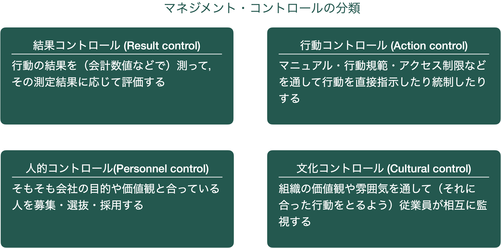

2 管理会計の意義
2023年度 管理会計
2.1 Case
Merchant and Van der Stede (2017, 22–23)
2.1.1 Leo’s Four-Plex Theater
Leo’s Four-Plex Theaterは，西テキサスの小さな街にある4スクリーンの映画館です。Leo Antonelliはこの映画館を1年前に買収し，従兄弟のBill Reillyを雇って経営を任せました。Leoは，映画館の収益性（利益性）が予想よりも悪いことについて悩んでいました。この業績不振はコントロールの問題によるのではないかと予想し，近隣の大学の会計教授Park Cockerillに相談しました。その結果，次のことが発見されました。

顧客は2つあるチケットカウンターでチケットを買います。チケットはフリーアドレス（座席指定ではない）もので，映画ごとに色分けされ，日付とともに「当日のみ有効」と印字されています。大人，子供，夜料金それぞれ決まった価格で販売され，それぞれシリアルナンバーが振られていたので，その日の売り上げは，その日最初のチケットのシリアルナンバーと，最後のチケットのシリアルナンバーを引き算して，チケットの単価を掛け合わせることで正確に計算可能です。
レジのお金は毎日集計され，実際に販売されたチケットの枚数×単価と比較されます。基本的には，少額ながら売上高よりも実際レジにある金額が少なく，平均10ドルほど足りていませんでした。時には100ドル程度の現金が不足しているレジもありました。
映画館の中に入るとロビーがあり，そこでは飲み物や軽食が売られています。そこで働く店員はおそらく地元の高校生もしくは大学生のようで，顧客の多くと知り合いのようでした。観察していると，店員が顧客からお金をもらい損ねる，もしくは売上をレジに打ち込み損ねる様子が複数回観察されました。
顧客は館内のゲートを通過するときにスタッフによりチケットを切られます。切られたチケットの半券はゲート横の箱に入れられます。教授が数えてみたところ，映画館から出て行く人の人数は，チケットの販売枚数とも，半券の販売枚数とも一致しませんでした。チケットの半券を見てみると (1) 違う色や違う日付の半券がありました。また，(2) Billのサインが書かれた無料招待券がかなりの枚数入っていました。また，証拠はありませんが教授はゲートのスタッフが自分の友人をチケットなしで入れているのではないかと考えています。
2.1.2 課題
以下の二つについて，BEEFの第2回課題に記入してください。
マネジメントコントロール上の仕組みにどのような問題がありそうですか？コントロールが弱い，足りていない，不完全な部分を挙げてみてください。
1を踏まえ，どのような改善策が考えられますか。1であげたどの問題についてかわかるように書いてください。
2.2 管理会計とは
組織の構想実現のために企業内で整備される仕組み
企業のデータを構想実現に役立てる仕組み
会計データをはじめとしたデータを経営管理のために使う
組織のさまざまな階層における経営管理者が組織目標達成のために遂行する仕事。
2.2.1 企業のデータを経営管理に使う
企業のデータ？
企業はさまざまな情報源からさまざまなデータを集めている
財務データ
- 売上原価原価
- 人件費
- 研究開発費
- 広告宣伝費
- 売上高
非財務データ
- 人事評価データ
- 良品率（不良品率）
- 顧客満足度
- 従業員満足度
- 研修参加率
- 現場の観察
- 面談

経営管理に使う?
大きく分けて2種類の使い方があるとされる(Luft 2009; Grafton et al. 2010) (伊丹・青木 2016)
従業員の行動に影響を与える
業績評価アプローチ
（意思決定影響機能・影響システム）
- 企業目標に向かって自発的に働いてくれるよう仕向ける
- 目標数値を設定
- 目標を達成したかどうかで評価
- 評価に応じて昇給やボーナスを提供
- 長期的な評価を踏まえて役職者を選抜
意思決定に役立てる
意思決定アプローチ
（意思決定支援機能・情報システム）
- 部下に追加の指示を出す？それともそのまま任せる？
- 原価変動を調査する？それとも現状維持？
- 新規事業AとBどちらに参入する？
- 新しい工場・設備を導入する？
- 自社で作る？外注する？
- 撤退する？継続する？
- 広告宣伝費にいくらかける？
両アプローチは，同じ仕組みを共有しているので相互に関係する
時に従業員の行動に意図しない影響を与えることも
2.2.2 例
例1：予算
予算の仕組みは企業がどこにどれぐらいのお金や人員をかけるか，という意思決定に使うという意味で計画（意思決定支援）として使われる
同時に予算の達成度は従業員の評価やボーナスに関わり，従業員の行動に影響を与える（意思決定影響）ためにも使われる

例2：投資に関する稟議の仕組み
- ある意思決定の基準を決める
- 経営者の意図は，投資意思決定の状況の把握
- （本当は必要だけど）役員会に目をつけられたくないから高額投資は避けよう
- 経営者に目をつけられたくない，という動機から，行動が変わる

例3：全国学力テスト
文部科学省は，全国学力テストというテストを全国の小学生・中学生に対して行なっている。
全国的な児童生徒の学力や学習状況を把握・分析し，教育施策の成果と課題を検証し，その改善を図るとともに，学校における児童生徒への教育指導の充実や学習状況の改善等に役立てる。さらに，そのような取組を通じて，教育に関する継続的な検証改善サイクルを確立する。（令和5年度全国学力・学習状況調査に関する実施要領 ）


Yahoo! Japan ニュース (2018/8/29)
全国学力テスト 事前練習に追われる学校現場 授業が進まない
- 現状の把握のための学力試験（意思決定支援）のはずが
- 教員たちは対策に追われる（意思決定影響）
例4：大学の授業での出席管理
背景
- （オンライン講義が導入される前）基本的に授業資料は紙で印刷しての配布が好まれていた。
- 教員は毎回余って廃棄される資料の処理が面倒く…環境に悪いと思っていた
測定
- 配布資料の適切な印刷枚数を把握するため，出席を取ることにした。
- いつも同じメンバーが来ていないのか，それとも出席したりしなかったりという人がたくさんいるのか
- シラバスには出席点は設定されておらず，成績には関係がない。
結果
- 欠席者の半数程度はいつも来ていない人だった（その人たちの分は印刷しなくても良い）
- 出席状況が良くなった
- ？
2.2.3 まとめ
- 管理会計は「組織の構想実現のために企業内で整備される仕組み」
- 特に会計データをはじめとする数値データを経営管理に役立てるような仕組み
- 期待される役割は
意思決定影響機能：目標設定や業績評価を通して従業員を企業のために努力するよう仕向ける
意思決定支援機能：より良い（コストパフォーマンスが高い）決定や判断ができるようにする
- 管理会計の仕組み（予算や原価計算，意思決定の基準など）は両方の役割を同時に果たす
- 意思決定支援のために作られた仕組みが時に予期せぬ行動への影響をもたらす場合も
2.3 財務会計との違い
管理会計と財務会計は，「会計学」という領域にありますが，実際大きく違います。
2.3.1 違い
目的が違う
財務会計は，組織の成績・状況を投資家や銀行，税務当局等主に組織外部の関係者に伝達する
- 財務諸表（損益計算書・貸借対照表・キャッシュフロー計算書等）を作成・公表
管理会計は，企業の構想（目的・目標）実現のために役立てる
利用者が違う
財務会計の利用者は投資家や銀行，税務当局など組織外部の関係者
- 組織内では，主に経理部やIR関連部署が関わる
管理会計の利用者は経営者をはじめとする組織内の全員
- 研究開発，製造，広告宣伝，販売，人事，経理，総務…どの部署に行っても関わる
ルールが違う
財務会計は，企業間の比較可能性を上げたり，公平な税金計算のために，一定のルールに従う必要がある
- 一般に公正妥当と認められる会計原則（GAAP）に従って作成
- 外部の監査人による監査
管理会計は，経営に役立つように柔軟に集計・計算・利用方法が設定される
- 運用コストをベネフィットが上回っているか？
行動への影響が違う
財務会計・管理会計の数値をめぐって経営者や従業員は行動を変える。近年の学術研究の多くの割合がこの会計数値をめぐる人の行動に関するもの
財務会計
会計数値によって自身の報酬や職務継続可能性が決まる経営者は，財務会計のルールや結果に影響を受けて行動する。
- 裁量的発生高を調整することで，経営成績を良く（時に悪く）なるようにする
- 研究開発費や広告宣伝費のような費用を調整することで経営成績を良く（時に悪く）なるようにする
- 社長就任直後に経営成績を悪く見せ，V字回復を演出する（big bath）
管理会計
- 管理会計は組織内のルールとなる。従業員はそのルールの中でうまく立ち回るような行動をとるという意味で管理会計の影響を受ける。
- 目標に設定された数値を良くするために頑張る（同時に評価されない指標は軽視する？）
- 評価期間の数値が良くするために頑張る（代わりに長期的な成績を犠牲にする）
- 連続で目標達成できるよう頑張る（そのために目標が上がりすぎないよう立ち回る）
- 予算を超過しないよう，あらかじめたくさん予算を取っておく（予算スラック）
2.3.2 共通点
会計学として扱われる
複式簿記の仕組みで記録される会計データを共用している
- ただし，管理会計は数量データや人事データ，顧客データ，posデータなど，会計データ以外も使う
この共通点が問題を引き起こすことも (Johnson and Kaplan 1987; Johnson et al. 1992)
- 簿記の記録はそもそも財務会計目的で作成されている
- 期間利益をより正確に計算する
- この目的を達するために会計基準が整備されている
- この財務会計目的で作られた数値に引っ張られて判断がゆがむことがある（管理会計の有用性の喪失 (Johnson and Kaplan 1987; Johnson et al. 1992)）
- 経営管理のためには，
ある期間で区切らない方がいいかもしれない
過去の出来事を正確に把握する数値よりも，不正確でも将来予測に関する情報が入った数値のほうがいいかもしれない
- 経営管理のためには，
2.4 類似概念とその違い
2.4.1 マネジメント・コントロール
- マネジメント・コントロール（Management Control）とは，組織内の上位管理者（経営層をはじめとする管理職）が，下位の管理職に対して影響を及ぼすプロセス
- 管理会計の2つの役割のうち，従業員に影響を及ぼす（意思決定影響）役割と関連
- 経営者は従業員を雇い「組織目標のために働いてほしい」と考えるが，
- そもそも従業員は組織目標のために働きたいと思っているわけではない
- 組織目標に対する働きが，必ずしも経営者の意図していたものになるとは限らない
- 組織目標のために，経営者の意図する方法で頑張ってくれるように仕向ける（コントロール）する
- マネジメント・コントロールの手段として中心的な役割を果たすのが管理会計の仕組み
- 権限や責任を明確な数値目標に落とし込む予算
- 原価や売上の数値によって具体的な目標を設定
- 従業員の頑張り度合いを会計成績を通して見える化
- 目標の達成度に応じて報酬を決定
- ただし，マネジメント・コントロールの手段は管理会計だけに限られてはいない
- 例えば，企業の理念や行動規範，マニュアル，組織文化などもマネジメント・コントロールの手段となる
